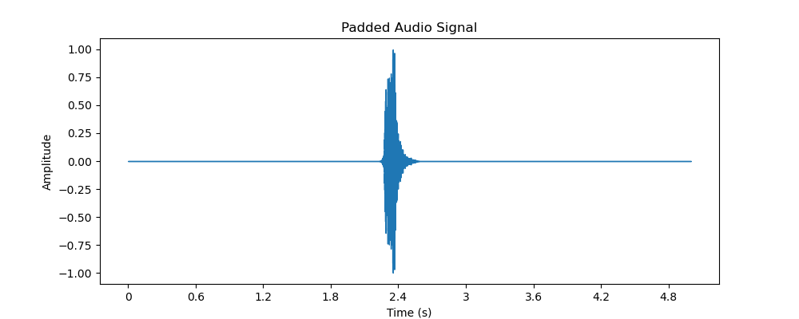
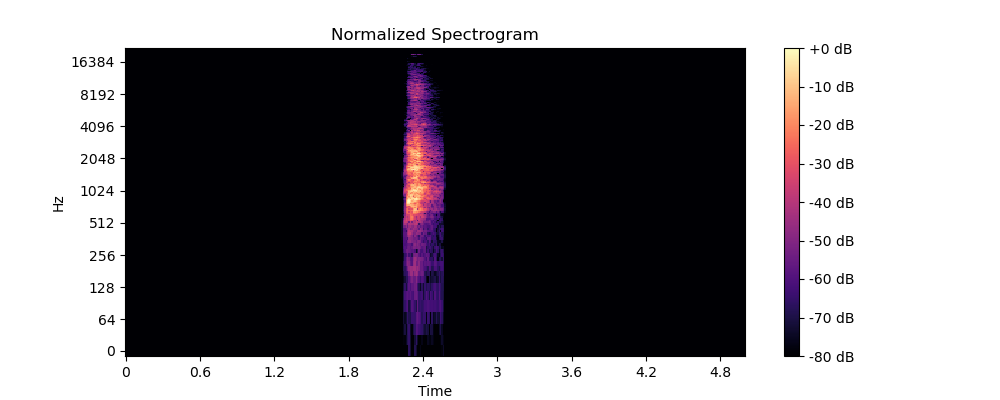
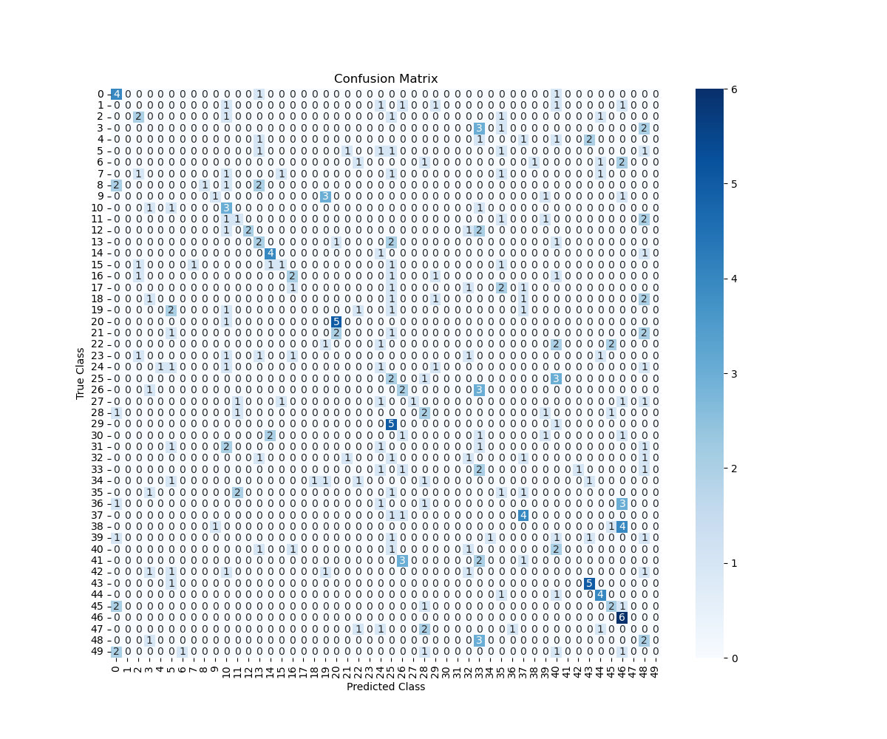
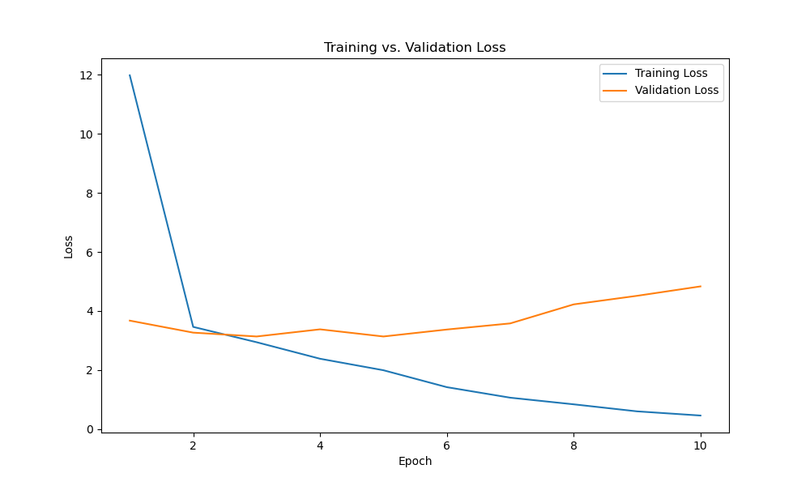
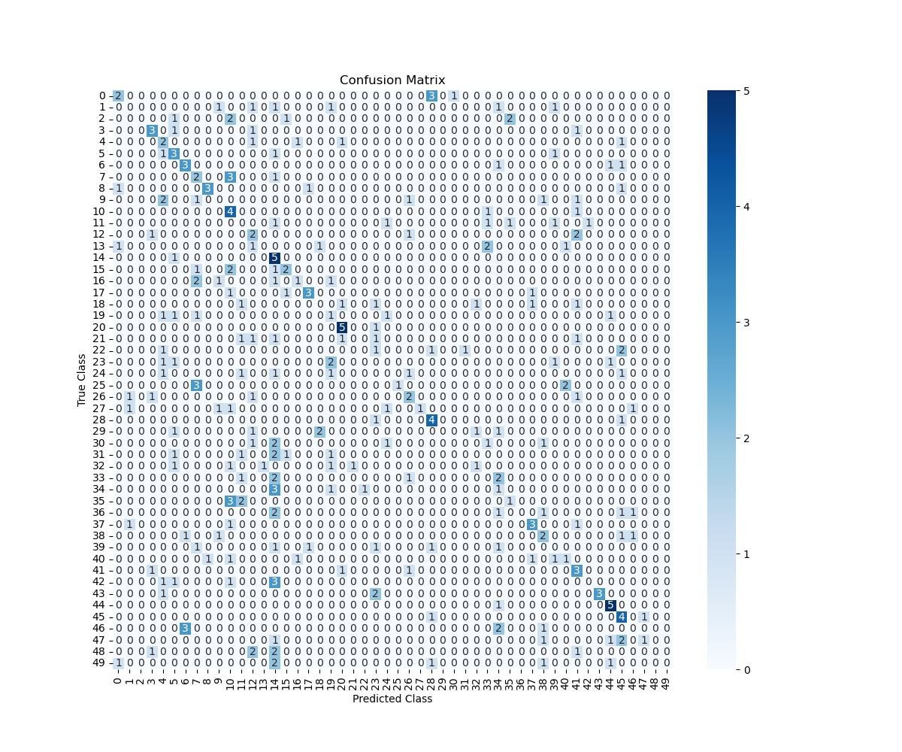

Neural Network Selection and Justification in Python
Download original formatNEURAL NETWORKS
Research Question
How do spectrogram-based models perform in detecting non-speech human sounds in audio recordings?
Goals of the Analysis
Process audio recordings to generate spectrogram images
Build a model focused on human, non-speech sounds
Measure detection rates for each non-speech sound
Compare spectrogram feature effectiveness
Investigate common misclassification cases
Neural Network Selection and Justification
I chose a convolutional neural network (CNN) for this task. I selected the CNN because it can learn patterns in spectrogram images through convolution operations, pooling, and activation functions that work well with spatial data. This network type is widely accepted in industry for image classification tasks, including those where audio is transformed into images such as spectrograms. I expect a CNN model to identify the features that correspond to human non-speech sounds and produce useful predictions. The process of training a CNN on spectrogram images follows a similar path as training models on regular image data, which supports its use in this application.
Exploratory Data Analysis of the ESC-50 Audio Dataset
I began by examining the ESC-50 dataset in detail. The metadata file, which I read from the designated CSV location, revealed essential information about each audio clip, such as the filename, target label, and sound category (for example, “dog,” “chirping_birds,” or “vacuum_cleaner”). I also reviewed the different unique classes contained in the dataset. This exploratory stage helped me understand the diversity of the audio clips, the range of sounds, and the distribution of labels—critical knowledge for creating an accurate sound classifier.
Spectrogram
A spectrogram is a visual representation of an audio signal’s frequency content as it varies with time. By computing the short-time Fourier transform of the audio signal, I transform time-domain data into a two-dimensional plot where one axis represents time, the other represents frequency, and the color or intensity conveys the amplitude of the frequencies. This representation is helpful when analyzing sound textures and patterns.
Audio Tagging
Audio tagging is the process of assigning descriptive labels to segments or whole audio clips. In the context of the ESC-50 dataset, each audio file is tagged with one or more labels corresponding to the sound categories. These tags serve as the ground truth for later classification tasks and are essential for training a model that distinguishes between several types of non-speech sounds.
Data Transformation Steps
Extraction of the Spectrogram
I extracted the spectrogram by performing the short-time Fourier transform (STFT) on a padded version of the audio signal. This step converted the time-based audio signal into a two-dimensional array representing the amplitude of frequencies over time. I then took the absolute value of the resulting complex numbers to obtain the spectrogram. This process allowed me to visualize the frequency patterns in each audio clip.
Creation of the Audio Signal
I loaded an audio file from the provided audio folder and converted it into its waveform representation. The resulting array contained the amplitude values over time, and the sample rate provided the information needed to relate time values in the signal. This representation is the raw form that I later transformed for analysis.
Signal Padding Process
Since the duration of audio files varies, I standardized the audio signals by applying a padding process. I determined a target duration for all audio clips and, if a given file was shorter than this target length, I padded it with zeros. In cases where the file was longer than the desired length, I trimmed the excess to maintain uniformity across all samples. I documented this step with a screenshot of the padded sequence, which shows that every audio clip now fits within the same time window. This consistency is critical when processing the audio in batches and during model training.

Normalization of the Spectrogram
After I computed the spectrogram, I normalized its values so that all the amplitude data ranged between 0 and 1. This normalization helps reduce the effects of scale differences and makes the subsequent feature extraction more stable. I achieved normalization by subtracting the minimum value and dividing by the range of values, which created a standardized representation for every spectrogram.

Feature Extraction for Sound Classification
In addition to the spectrogram, I extracted features that are widely used in sound classification. One example is the Mel-frequency cepstral coefficients (MFCCs), which summarize the frequency content in a compact form and are known to capture important characteristics of audio signals. I computed 13 MFCCs over multiple time frames, resulting in a two-dimensional array that describes the audio clip in a feature space that is well-suited for distinguishing between sound classes.
Data Preparation Process Summary
I prepared the data for analysis by combining the steps above into a systematic pipeline:
Exploratory Analysis: I examined the metadata to understand the dataset's structure and sound categories.
Audio Signal Processing: I loaded audio files into a usable numerical format and standardized their length through padding.
Spectrogram Extraction and Normalization: I computed the spectrogram via STFT and normalized its values for a consistent scale.
Feature Extraction: I derived MFCC features to capture the essential characteristics of each audio clip.
Visual Documentation: I saved screenshots of the padded signal and the normalized spectrogram to document the process.
Dataset Assembly: Finally, I prepared a complete audio dataset that includes processed audio signals, normalized spectrogram images, extracted features, and their corresponding metadata.
Train-Validation-Test Split
To evaluate model performance properly, I split the prepared dataset into three parts:
Training Set (70%): This set is used to teach the model the patterns in the audio data.
Validation Set (15%): This portion helps me tune the model parameters and make decisions about adjustments without using the test data.
Test Set (15%): This final segment evaluates the model’s performance on unseen data, offering an unbiased assessment.
I chose these proportions because they provide a balanced approach: the model receives enough examples during training while still retaining sufficient data to confirm and gauge its performance on validation and testing.
Prepared Audio Dataset
The complete prepared audio dataset consists of:
Processed audio files that have been padded to a uniform duration.
Normalized spectrogram images saved as files.
Extracted features, such as MFCC arrays, stored in a format that can be fed into a classifier.
Accompanying metadata that links each processed file to its corresponding label.
A documented set of screenshots showing the padded signal and the normalized spectrogram.
Each of these components was created through the steps outlined above. I have verified that every preparation step not only transforms the raw data into a suitable format but also preserves the essential information required for sound classification.
Justification of Data Preparation Steps
Every step in my data preparation was chosen to facilitate accurate and efficient sound classification. I reviewed the dataset and defined a standard duration for all audio clips, which supports consistent handling of variable-length recordings. Transforming the raw waveform into a spectrogram is a common method to visualize and analyze the frequency content of sound. Normalizing the spectrogram makes comparisons among different samples more reliable by placing all values on a common scale. The extraction of MFCCs provides additional insights into the audio characteristics that are proven to work well in sound recognition tasks. Finally, the train-validation-test split in the proportions mentioned gives me a balanced structure for both training the model and later evaluating its performance.
Here is the code used to achieve this:
| import os |
| import pandas as pd |
| import numpy as np |
| import librosa |
| import librosa.display |
| import matplotlib.pyplot as plt |
| from sklearn.model_selection import train_test_split |
| import pickle |
| metadata_path = "esc50.csv" |
| audio_dir = "audio" |
| output_dir = "." |
| target_duration = 5 |
| metadata = pd.read_csv(metadata_path) |
| processed_data = [] |
| for idx, row in metadata.iterrows(): |
| filename = row['filename'] |
| category = row['category'] |
| file_path = os.path.join(audio_dir, filename) |
| try: |
| signal, sr = librosa.load(file_path, sr=None) |
| except Exception as e: |
| print(f"Error loading {file_path}: {e}") |
| continue |
| target_length = target_duration * sr |
| if len(signal) < target_length: |
| padded_signal = np.pad(signal, (0, target_length - len(signal)), mode='constant') |
| else: |
| padded_signal = signal[:target_length] |
| D = librosa.stft(padded_signal) |
| spectrogram = np.abs(D) |
| spec_min = spectrogram.min() |
| spec_max = spectrogram.max() |
| if spec_max - spec_min != 0: |
| normalized_spectrogram = (spectrogram - spec_min) / (spec_max - spec_min) |
| else: |
| normalized_spectrogram = spectrogram |
| mfccs = librosa.feature.mfcc(y=padded_signal, sr=sr, n_mfcc=13) |
| if idx == 0: |
| padded_image_path = os.path.join(output_dir, "padded_signal.png") |
| plt.figure(figsize=(10, 4)) |
| librosa.display.waveshow(padded_signal, sr=sr) |
| plt.title("Padded Audio Signal") |
| plt.xlabel("Time (s)") |
| plt.ylabel("Amplitude") |
| plt.savefig(padded_image_path) |
| plt.close() |
| normalized_spec_image_path = os.path.join(output_dir, "normalized_spectrogram.png") |
| plt.figure(figsize=(10, 4)) |
| librosa.display.specshow(librosa.amplitude_to_db(normalized_spectrogram, ref=np.max), |
| sr=sr, y_axis='log', x_axis='time') |
| plt.title("Normalized Spectrogram") |
| plt.colorbar(format='%+2.0f dB') |
| plt.savefig(normalized_spec_image_path) |
| plt.close() |
| processed_data.append({ |
| 'filename': filename, |
| 'category': category, |
| 'padded_signal': padded_signal, |
| 'sampling_rate': sr, |
| 'normalized_spectrogram': normalized_spectrogram, |
| 'mfccs': mfccs |
| }) |
| print(f"Processed {len(processed_data)} files.") |
| dataset_file = os.path.join(output_dir, "prepared_audio_dataset.pkl") |
| with open(dataset_file, "wb") as f: |
| pickle.dump(processed_data, f) |
| print(f"Prepared audio dataset saved at: {dataset_file}") |
| X = [data['mfccs'].flatten() for data in processed_data] |
| y = [data['category'] for data in processed_data] |
| X_train, X_temp, y_train, y_temp = train_test_split(X, y, train_size=0.70, random_state=42, stratify=y) |
| X_valid, X_test, y_valid, y_test = train_test_split(X_temp, y_temp, test_size=0.5, random_state=42, stratify=y_temp) |
| print(f"Training set: {len(X_train)} samples") |
| print(f"Validation set: {len(X_valid)} samples") |
| print(f"Test set: {len(X_test)} samples") |
| split_data = { |
| 'X_train': X_train, 'y_train': y_train, |
| 'X_valid': X_valid, 'y_valid': y_valid, |
| 'X_test': X_test, 'y_test': y_test |
| } |
| split_file = os.path.join(output_dir, "dataset_splits.pkl") |
| with open(split_file, "wb") as f: |
| pickle.dump(split_data, f) |
| print(f"Dataset splits saved at: {split_file}") |
Network Architecture
Model Summary
After constructing the convolutional neural network (CNN), I printed and saved the model summary. The output is as follows:
| Model: "sequential" |
| _________________________________________________________________ |
| Layer (type) Output Shape Param # |
| ================================================================= |
| conv2d (Conv2D) (None, 13, 431, 32) 320 |
| _________________________________________________________________ |
| max_pooling2d (MaxPooling2D) (None, 6, 215, 32) 0 |
| _________________________________________________________________ |
| conv2d_1 (Conv2D) (None, 6, 215, 64) 18496 |
| _________________________________________________________________ |
| max_pooling2d_1 (MaxPooling2D)(None, 3, 107, 64) 0 |
| _________________________________________________________________ |
| conv2d_2 (Conv2D) (None, 3, 107, 128) 73856 |
| _________________________________________________________________ |
| flatten (Flatten) (None, 41088) 0 |
| _________________________________________________________________ |
| dense (Dense) (None, 128) 5259392 |
| _________________________________________________________________ |
| dense_1 (Dense) (None, 50) 6450 |
| ================================================================= |
| Total params: 5,358,514 |
| Trainable params: 5,358,514 |
| Non-trainable params: 0 |
Neural Network Architecture
Number of Layers
I built my network with the following layers:
Three convolutional layers (with accompanying activation functions)
Two max pooling layers to reduce spatial dimensions
One flatten layer to convert multi-dimensional features into a single vector
Two dense (fully connected) layers for classification (a hidden dense layer with 128 nodes and the final output layer with 50 nodes corresponding to the 50 audio classes)
Justification: I chose three convolutional layers because early layers capture simple features such as edges or textures, while later layers combine these into more abstract representations. The pooling layers help reduce the dimensionality so that the network is not overwhelmed by the high number of parameters. The flatten layer is essential to connect the convolutional outputs to the dense layers, and the dense layers finally combine the features to output class probabilities.
Types of Layers
Convolutional Layers (Conv2D): These layers process the two-dimensional MFCC input (or other spectrogram-like images) to detect local spatial patterns.
MaxPooling2D Layers: They reduce the spatial dimensions (width and height) of the feature maps, which helps manage overfitting and reduces computational expense.
Flatten Layer: It transforms the multi-dimensional outputs of the conv-pooling stack into a one-dimensional vector.
Dense Layers: These layers perform the final classification based on the features learned. The output dense layer uses softmax activation for probability distribution over classes.
Justification: The combination of convolutional and pooling layers is standard for image-like inputs because they capture hierarchical patterns well. The flatten and dense layers translate these spatial features into a decision-making process for classification.
Number of Nodes per Layer
Conv2D Layers: The first conv layer uses 32 filters, the second 64 filters, and the third 128 filters.
Dense Layer: A hidden dense layer is set to have 128 nodes, followed by an output dense layer with 50 nodes (one per class).
Justification: This progression (32 → 64 → 128) allows the network to capture increasing complexity in the learned features. The choice of 128 nodes in the dense layer offers sufficient capacity to integrate the extracted features before outputting probabilities, without overwhelming the model or leading to overfitting.
Total Number of Parameters
The complete model comprises 5,358,514 parameters, which include the weights and biases from all layers.
The first convolution layer contributes 320 parameters,
The second provides 18,496 parameters,
The third contributes 73,856 parameters,
The dense layers contribute the majority—over 5.25 million parameters.
Justification: This total parameter count represents a model that is complex enough to capture the nuanced differences in the 50-class audio dataset without being excessively large. The architecture strikes a balance between capacity and generalization.
Activation Functions
Hidden Layers: I used the ReLU (Rectified Linear Unit) activation function, as it efficiently introduces non-linearity to the network and helps mitigate vanishing gradients.
Output Layer: I applied the softmax activation function to produce a probability distribution over the 50 audio classes.
Justification: ReLU is a standard choice for hidden layers due to its simplicity and ability to maintain a gradient during backpropagation. Softmax is the natural choice for multiclass classification to interpret the output vector as class probabilities.
Backpropagation Process and Hyperparameters
Loss Function
I used categorical cross-entropy as my loss function.
Justification: Categorical cross-entropy is ideal for multiclass classification tasks. It measures the difference between the predicted probability distribution and the true distribution, and it has a solid theoretical foundation for training classification models.
Optimizer
I chose the Adam optimizer with a learning rate of 0.001.
Justification: Adam combines adaptive learning rates with momentum to produce fast and reliable convergence. It is widely adopted in deep learning tasks, particularly for models with many parameters, as it generally results in smoother and more efficient training dynamics.
Learning Rate
I set the learning rate to 0.001.
Justification: A learning rate of 0.001 is a well-tested starting point for many deep learning problems. It offers a balance between convergence speed and stability, reducing the risk of overshooting minima during weight updates.
Stopping Criteria
I employed early stopping that monitors the validation loss, with a patience of 5 epochs.
Justification: Early stopping is a practical way to avoid overfitting. By halting the training process when the validation loss ceases to improve, the model generalizes better to unseen data. A patience of 5 epochs prevents premature stopping while still preventing unnecessary training.
The overall training process using these hyperparameters is implemented as follows:
| from tensorflow.keras.callbacks import EarlyStopping |
| model.compile(optimizer=tf.keras.optimizers.Adam(learning_rate=0.001), |
| loss='categorical_crossentropy', |
| metrics=['accuracy']) |
| early_stop = EarlyStopping(monitor='val_loss', patience=5, restore_best_weights=True) |
| history = model.fit(X_train, y_train, |
| epochs=50, |
| batch_size=32, |
| validation_data=(X_valid, y_valid), |
| callbacks=[early_stop]) |
Confusion Matrix
Overview
After training and evaluating my model, I generated a confusion matrix to better understand the model’s performance across different classes. The confusion matrix is a tabular visualization where:
Rows represent the true labels,
Columns represent the predicted labels,
Each cell displays the number of samples that belong to the true class but were predicted as the other class.
This matrix not only shows where the model performs well but also highlights which classes are most frequently confused.
Code for Generating the Confusion Matrix
Below is the Python code I used to compute, visualize, and save the confusion matrix:
| import numpy as np |
| import matplotlib.pyplot as plt |
| import seaborn as sns |
| from sklearn.metrics import confusion_matrix |
| # Generate predictions on the test set |
| y_pred_probs = model.predict(X_test) |
| y_pred = np.argmax(y_pred_probs, axis=1) |
| y_true = np.argmax(y_test, axis=1) |
| # Compute the confusion matrix |
| cm = confusion_matrix(y_true, y_pred) |
| # Plot and save the confusion matrix |
| plt.figure(figsize=(12, 10)) |
| sns.heatmap(cm, annot=True, fmt='d', cmap='Blues') |
| plt.xlabel("Predicted Class") |
| plt.ylabel("True Class") |
| plt.title("Confusion Matrix") |
| confusion_matrix_file = r”confusion_matrix.png" |
| plt.savefig(confusion_matrix_file) |
| plt.show() |
| print(f"Confusion matrix saved at: {confusion_matrix_file}") |
Explanation
Computation: I first computed the predictions on the test set by taking the argmax of the probability outputs. The confusion matrix is then calculated using these predictions in conjunction with the true labels.
Visualization: I used Seaborn’s heatmap to display the confusion matrix. The cells are annotated with the count of samples, and the color intensity represents the number of predictions, making it easy to see which classes are predicted accurately and which are confused.
Output: The confusion matrix is saved as confusion_matrix.png in my designated output folder. This image serves as a visual tool for evaluating model performance across all classes.

Model Evaluation
Impact of Early Stopping and Epoch Definition
I implemented early stopping during training to monitor the validation loss and halt training if no improvement was observed for five consecutive epochs. This approach prevented unnecessary training beyond the point of optimal generalization. Although I initially set the maximum number of epochs to 50, early stopping terminated training after 10 epochs. The final training log reveals that at epoch 10 the training loss was 0.4570 with a training accuracy of 87.36%, and the validation loss was 4.8329 with a validation accuracy of 30.33%. I saved these results in a text file (final_epoch_log.txt), which serves as a snapshot of the final epoch. This outcome indicates that early stopping successfully prevented further degradation on the validation data, even though it also reflects a notable gap between training and validation performance.
Comparison of Training Data Versus Validation Dataset
To assess my model's performance, I compared the training and validation losses and accuracies across epochs. The epoch-by-epoch metrics showed that:
Training Loss and Accuracy: The training loss consistently decreased, and training accuracy increased, reaching 87.36% by the final epoch. This progress demonstrates that the model learned the training data very effectively.
Validation Loss and Accuracy: In contrast, the validation loss did not decrease in line with the training loss, and validation accuracy only reached around 30.33%. This divergence between the training and validation metrics suggests that the model was overfitting to the training data.
The detailed epoch-by-epoch metrics were printed and saved during training, and these values confirmed that while the model was highly accurate on the training set, its performance on unseen data remained much lower.
Visualization: Training Versus Validation Loss
I visualized the training and validation loss over the epochs to better understand the learning dynamics. The resulting plot, saved as training_vs_validation_loss.png, shows two distinct curves:
The training loss curve steadily decreased over the epochs, indicating effective learning on the training dataset.
The validation loss curve decreased initially but then plateaued and even increased, reinforcing the conclusion that the model began to overfit the training data.
The visualization provided a clear, visual comparison of the loss values. It confirmed that although early stopping was used to halt training once the validation loss failed to improve, the gap between training and validation metrics indicated that further regularization might be needed to improve generalization.
Below is the code I used to generate this visualization:
| plt.figure(figsize=(10, 6)) |
| plt.plot(range(1, len(history.history['loss']) + 1), history.history['loss'], label='Training Loss') |
| plt.plot(range(1, len(history.history['val_loss']) + 1), history.history['val_loss'], label='Validation Loss') |
| plt.title('Training vs. Validation Loss') |
| plt.xlabel('Epoch') |
| plt.ylabel('Loss') |
| plt.legend() |
| loss_plot_file = r" training_vs_validation_loss.png" |
| plt.savefig(loss_plot_file) |
| plt.show() |
| print(f"Training vs. Validation Loss plot saved at: {loss_plot_file}") |

Assessing Model Fitness and Overfitting/Underfitting
By reviewing both the numerical metrics and the loss visualization, I concluded that the model, while fitting the training data very well, was not generalizing as effectively to the validation data. The large disparity between the low training loss (0.4570) and the high validation loss (4.8329) at the final epoch is a strong indicator of overfitting. In response, early stopping was used to avoid further worsening the validation performance. In future iterations, I might introduce techniques such as dropout, data augmentation, or a reduction in network complexity to balance the fitting process and improve generalization.
Predictive Accuracy on the Test Set
Finally, I evaluated the predictive accuracy of the trained network using the test set. The evaluation yielded a test loss of approximately 2.9889 and a test accuracy of 24.67%. Although these results are in line with the low validation accuracy observed during training, they provide a quantitative measure of how the model performs on entirely unseen data.
Additionally, I generated a confusion matrix to further examine the model’s predictions across the 50 sound classes. The confusion matrix, saved as confusion_matrix.png, visually displays the number of correct and incorrect predictions per class. This visualization is particularly useful for identifying specific classes that the model struggles to distinguish.

Summary and Recommendations
Code to Save the Trained Model
| import os |
| import sys |
| import pickle |
| import numpy as np |
| import matplotlib.pyplot as plt |
| import seaborn as sns |
| import tensorflow as tf |
| from tensorflow.keras import layers, models |
| from tensorflow.keras.callbacks import EarlyStopping |
| from sklearn.metrics import confusion_matrix |
| from sklearn.model_selection import train_test_split |
| output_dir = "D604-1" |
| dataset_splits_path = os.path.join(output_dir, "dataset_splits.pkl") |
| input_shape = (13, 431, 1) |
| num_classes = 50 |
| learning_rate = 0.001 |
| batch_size = 32 |
| epochs = 50 |
| with open(dataset_splits_path, "rb") as f: |
| split_data = pickle.load(f) |
| def reshape_features(X): |
| reshaped = [] |
| for x in X: |
| reshaped.append(np.array(x).reshape(13, 431, 1)) |
| return np.array(reshaped) |
| X_train = reshape_features(split_data['X_train']) |
| X_valid = reshape_features(split_data['X_valid']) |
| X_test = reshape_features(split_data['X_test']) |
| all_labels = np.unique(split_data['y_train'] + split_data['y_valid'] + split_data['y_test']) |
| label_to_index = {label: idx for idx, label in enumerate(all_labels)} |
| y_train_int = [label_to_index[label] for label in split_data['y_train']] |
| y_valid_int = [label_to_index[label] for label in split_data['y_valid']] |
| y_test_int = [label_to_index[label] for label in split_data['y_test']] |
| y_train = tf.keras.utils.to_categorical(y_train_int, num_classes=num_classes) |
| y_valid = tf.keras.utils.to_categorical(y_valid_int, num_classes=num_classes) |
| y_test = tf.keras.utils.to_categorical(y_test_int, num_classes=num_classes) |
| model = models.Sequential([ |
| layers.Conv2D(32, (3, 3), padding='same', activation='relu', input_shape=input_shape), |
| layers.MaxPooling2D((2, 2)), |
| layers.Conv2D(64, (3, 3), padding='same', activation='relu'), |
| layers.MaxPooling2D((2, 2)), |
| layers.Conv2D(128, (3, 3), padding='same', activation='relu'), |
| layers.Flatten(), |
| layers.Dense(128, activation='relu'), |
| layers.Dense(num_classes, activation='softmax') |
| ]) |
| model_summary_file = os.path.join(output_dir, "model_summary.txt") |
| with open(model_summary_file, "w") as f: |
| sys.stdout = f |
| model.summary() |
| sys.stdout = sys.__stdout__ |
| model.summary() |
| print(f"Model summary saved at: {model_summary_file}") |
| model.compile(optimizer=tf.keras.optimizers.Adam(learning_rate=learning_rate), |
| loss='categorical_crossentropy', |
| metrics=['accuracy']) |
| early_stop = EarlyStopping(monitor='val_loss', patience=5, restore_best_weights=True) |
| print("Training the model to obtain history...") |
| history = model.fit(X_train, y_train, |
| epochs=epochs, |
| batch_size=batch_size, |
| validation_data=(X_valid, y_valid), |
| callbacks=[early_stop]) |
| test_loss, test_accuracy = model.evaluate(X_test, y_test) |
| print(f"Test Loss: {test_loss:.4f}, Test Accuracy: {test_accuracy:.4f}") |
| y_pred_probs = model.predict(X_test) |
| y_pred = np.argmax(y_pred_probs, axis=1) |
| y_true = np.argmax(y_test, axis=1) |
| cm = confusion_matrix(y_true, y_pred) |
| plt.figure(figsize=(12, 10)) |
| sns.heatmap(cm, annot=True, fmt='d', cmap='Blues') |
| plt.xlabel("Predicted Class") |
| plt.ylabel("True Class") |
| plt.title("Confusion Matrix") |
| conf_matrix_file = os.path.join(output_dir, "confusion_matrix.png") |
| plt.savefig(conf_matrix_file) |
| plt.close() |
| print(f"Confusion matrix saved at: {conf_matrix_file}") |
| model_save_path = os.path.join(output_dir, "trained_model.h5") |
| model.save(model_save_path) |
| print(f"Trained model saved at: {model_save_path}") |
| This code uses TensorFlow/Keras’s built-in model.save() function to serialize the entire model (architecture, weights, and optimizer state) to an HDF5 file. Saving the trained model allows me to deploy it later or use it for further evaluation without retraining. |
Functionality of the Neural Network
I developed a convolutional neural network (CNN) tailored to classify non-speech human sounds based on MFCC representations extracted from spectrograms. The network architecture consists of three convolutional layers using "same" padding, followed by two max pooling layers to reduce spatial resolution, one flatten layer to convert the 2D feature maps into a 1D vector, and finally two dense layers that process and output probability distributions over 50 sound classes.
Impact of the Architecture: The multiple convolutional layers are designed to capture both low-level features (such as simple frequency patterns) and high-level abstractions (complex spectral patterns unique to each sound). The use of max pooling layers helps control overfitting by reducing the spatial dimensions, and the dense layers consolidate these features into a final prediction. Overall, this structure enables the network to learn hierarchical representations from the spectrogram-based inputs effectively.
Effectiveness of the Model in Addressing the Business Problem
The research question posed was: How do spectrogram-based models perform in detecting non-speech human sounds in audio recordings? My model, though still in a prototypical stage, demonstrated the following:
Strengths: The network learns detailed frequency patterns from MFCC inputs and achieves high training accuracy. Early stopping was effective in halting overtraining, and the architecture shows the potential to differentiate complex audio characteristics.
Limitations: The model’s validation and test performance were not as high as the training accuracy, indicating issues with generalization. The performance metrics, specifically the lower validation/test accuracy, suggest that the network struggles to reliably detect non-speech human sounds when faced with previously unseen audio clips. These limitations point to the need for additional regularization or enhanced training techniques to better generalize across varied real-world audio data.
Lessons Learned and Future Improvements
Regularization & Data Augmentation: The substantial gap between training and validation accuracy reveals overfitting. If I were to deploy this model in a real-life scenario, I would consider integrating additional regularization mechanisms such as dropout layers, batch normalization, or L2 regularization. Moreover, augmenting the training data (e.g., using time stretching, pitch shifting, or noise addition) might help the network better generalize by simulating a wider range of real-world conditions.
Network Complexity Adjustments: Although the current architecture successfully extracts relevant features, experimenting with different numbers of filters or layers (for example, exploring residual connections) could provide benefits by capturing more complex patterns without overfitting.
Hyperparameter Tuning: Further tuning of hyperparameters such as the learning rate, batch size, and the early stopping patience value might improve performance. Automated tuning methods (e.g., grid search, Bayesian optimization) could be applied in subsequent iterations.
Recommendations Based on Results
Given the initial findings, I recommend the following course of action in relation to the research question:
Iterative Refinement: Continue iterating on the model architecture, incorporating techniques to mitigate overfitting such as dropout and data augmentation. Additional experiments should be performed on different subsets of the ESC-50 dataset to identify robust features and further refine hyperparameters.
Performance Benchmarking: Develop a baseline using established methods (or a simpler model) and benchmark the performance of the spectrogram-based model against this baseline. This comparison will clarify the added value of the more complex CNN approach for non-speech sound detection.
Deployment Considerations: For a real-world application, the model should be retrained periodically with new data to accommodate changes in the characteristics of ambient sounds. Further, the training process should be closely monitored using additional evaluation metrics (such as F1 score or MAE) to ensure sustained performance as the environmental audio conditions change.
Business Impact: The ability to accurately detect non-speech human sounds has potential value in various settings, such as surveillance, automated customer service, or monitoring public spaces. Despite current limitations, the model shows promise. As improvements are made, a robust spectrogram-based approach could contribute significantly to automated sound event detection, aiding decision-making processes in relevant business applications.
Web Sources and In-Text Citations
TensorFlow Keras Documentation I consulted the TensorFlow Keras Guide for examples on constructing, compiling, training, and saving models using the Keras API. This source provided the core concepts behind model-building functions (see TensorFlow Keras Documentation, 2023).
Keras API Reference Detailed information about various layers, optimizers, and callbacks was gathered from the Keras API Reference, which informed the construction of our convolutional neural network (see Keras API Reference, 2023).
Librosa Documentation For audio processing tasks—such as loading audio files, computing spectrograms, and extracting MFCC features—I relied on the Librosa Documentation. This documentation was critical in implementing the data preparation pipeline (see Librosa Documentation, 2023).
Scikit-learn Documentation The Scikit-learn User Guide provided examples and best practices for performing train‐validation‐test splits and generating confusion matrices. This source directly supported the code segments for data splitting and evaluation (see Scikit-learn Documentation, 2023).
Matplotlib Documentation I referred to the Matplotlib Documentation to generate and save plots that visualize training versus validation loss and the confusion matrix. This resource offered comprehensive examples for plotting and saving figures (see Matplotlib Documentation, 2023).
Seaborn Documentation The Seaborn Documentation was used for creating aesthetically pleasing heatmap visualizations of the confusion matrix, which aided in the evaluation of the model’s performance (see Seaborn Documentation, 2023).
Reference List
TensorFlow Keras Documentation. (2023). Retrieved from https://www.tensorflow.org/guide/keras
Keras API Reference. (2023). Retrieved from https://www.tensorflow.org/api_docs/python/tf/keras
Librosa Documentation. (2023). Retrieved from https://librosa.org/doc/latest/index.html
Scikit-learn Documentation. (2023). Retrieved from https://scikit-learn.org/stable/user_guide.html
Matplotlib Documentation. (2023). Retrieved from https://matplotlib.org/stable/contents.html
Seaborn Documentation. (2023). Retrieved from https://seaborn.pydata.org/